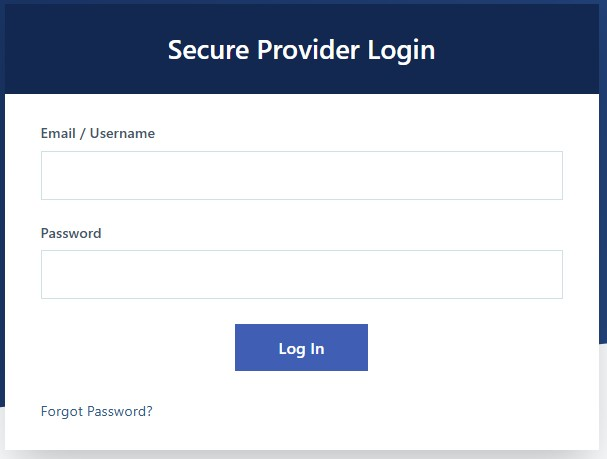
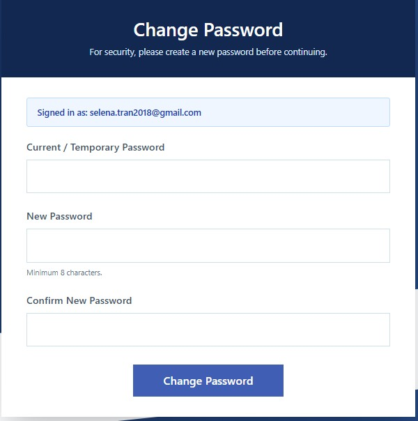

GETTING STARTED
Login
The Login page is the secure entry point into the True Care System platform. All users must authenticate before accessing any system resources. For first-time users, the system requires a password change immediately after signing in with the temporary password provided in the Welcome Email.
Prerequisites
- Valid True Care System user account.
- Assigned role and permissions.
- Supported web browser.
- Internet connection.
Step 1 — Sign In
Open the True Care System Login page and sign in using your Email and Password. If this is your first login, enter the temporary password provided in your Welcome Email.

Figure 1. Login Screen
- Open the Login page.
- Enter your Email.
- Enter your Password or Temporary Password.
- Click Sign In.
Step 2 — Change Password (First Login Only)
When signing in with a temporary password for the first time, the system automatically redirects you to the Change Password screen. This step is required before accessing the Dashboard.

Figure 2. First-Time Password Change
- Enter your Current Password (Temporary Password).
- Create a New Password.
- Confirm the New Password.
- Click Change Password.
- The system saves the new password.
- You are redirected to the Dashboard.
Successful Login
- The appropriate Dashboard is displayed.
- Menus are loaded according to the assigned role.
- A secure authenticated session is established.
- The login activity is recorded in the Audit Log.
Security
- HTTPS encrypted communication.
- Role-based access control.
- Secure session management.
- Automatic session timeout.
- Failed login monitoring.
HIPAA Considerations
- Never share your username or password.
- Always sign out before leaving your workstation.
- Do not save passwords on public or shared computers.
- Protect Protected Health Information (PHI) from unauthorized access.
Troubleshooting
- Verify your Email and Password.
- Check whether Caps Lock is enabled.
- Confirm your internet connection.
- Use Forgot Password if you cannot remember your password.
- Contact your Provider Administrator if you are unable to access the system.
Frequently Asked Questions
Why am I required to change my password?
Every newly created account receives a temporary password. For security purposes, the password must be changed during the first login.
Can I skip the password change?
No. A new password is required before you can access the Dashboard.
What happens after I change my password?
The new password becomes active immediately, and you will be redirected to the Dashboard.